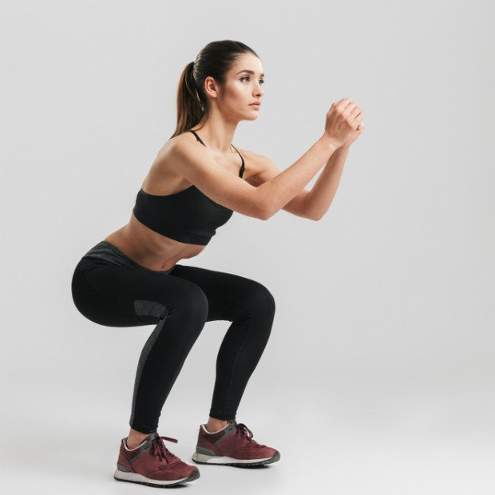
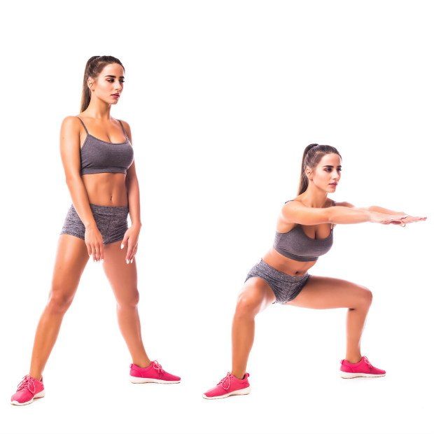
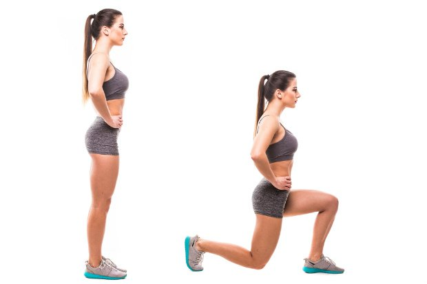
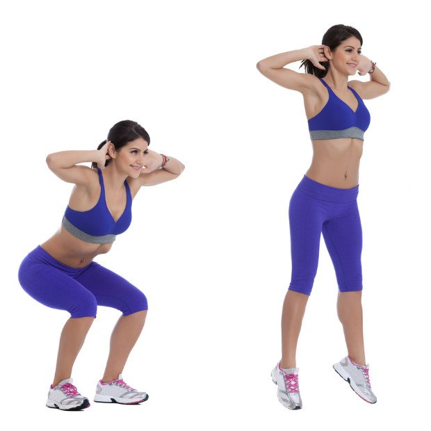
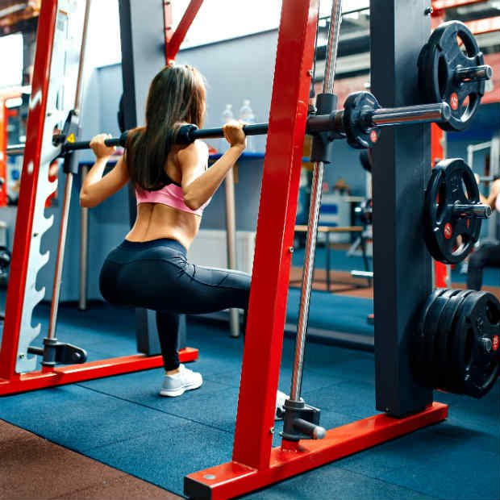

Agachamento: benefícios, tipos e como fazer
Escrito por: Redação • Atualizado em: 27/06/2019
Agachamento: para que serve
Se você já pisou em uma academia, deve ter visto alguém fazer o agachamento. Esse exercício, não à toa, virou febre nos treinos de musculação e em outras modalidades por ser muito versátil e eficiente no que se propõe: fortalecer e modelar as pernas e bumbum. "Ele pode ser considerado um dos exercícios mais completos que existem, pois a composição dos músculos, articulações e tendões envolvidos é grande", conta a professora de musculação Tatiane Cupertino.
O movimento "consiste na flexão e na extensão dos joelhos e quadril, como se fosse realizar o movimento de sentar e levantar, partindo de uma posição vertical do corpo", explica o educador físico Daniel Barsottini, do Além das Curvas.
Benefícios do agachamento
O agachamento é um movimento funcional e vital para todos nós, de acordo com a professora da BioRitmo Tais Teixeira. "Ou seja, é um movimento que usamos o tempo todo, seja para sentar numa cadeira, para ir ao banheiro. Quem agacha bem tem uma boa mobilidade de quadril e força nos grandes grupos musculares das pernas. É um exercício de fortalecimento dos músculos das coxas, quadris, glúteos, bem como ossos, tendões e ligamentos. Ou seja, deixa as coxas e o bumbum durinho", conta.
Confira detalhes dos principais benefícios:
1) Exercita o corpo por completo:
"O agachamento trabalha quadríceps femural, glúteo médio, glúteo máximo, bíceps femural (posterior da coxa), abdominal e lombar", explica a personal trainer Mariana Figueiredo. Ao fortalecer as pernas e os glúteos, a lombar fica protegida e acaba ganhando mais equilíbrio quando o corpo está em movimento.
Se você acrescentar carga na parte superior do corpo, terá quase todo o corpo trabalhado durante o exercício. "Você pode elevar os braços, segurar uma bola com as mãos, usar barra nos trapézios, peso acima da cabeça, kettlebell, etc.", sugere a professora Tatiane. Essa alternativa é ótima para quem tem pouco tempo para treinar e quer fazer exercícios que trabalhem o corpo por completo.
2) Ajuda a realizar as tarefas diárias:
"Com as pernas fortes, o corpo tem mais facilidade para realizar o movimento de sentar e levantar de uma cadeira ou sofá, por exemplo", conta a professora Tatiane. Por isso, o agachamento é indicado tanto para quem quer definir o corpo quanto para quem pretende apenas manter um condicionamento físico ideal para realizar tarefas cotidianas.
3) Melhora a capacidade cardiorrespiratória:
Como todo exercício físico realizado de forma correta, o agachamento permite uma expansão torácica durante a sua realização. "Como resultado, há melhora da capacidade respiratória e benefícios ao sistema cardiovascular", conta Mariana. Mas é importante que você faça o movimento de forma correta: inspire ao flexionar os joelhos e expire ao se levantar.
4) Reduz problemas de coluna:
"Ao ter coxas e pernas mais fortes, não solicitamos tanto os músculos da zona lombar e da cintura", explica Tatiane. Com os glúteos trabalhados de forma mais intensa e em amplitude total, também ficamos com a bacia alinhada e uma melhor postura da coluna. Os resultados são menos dores nas costas causadas por má posição do corpo durante o dia.
Tipos de agachamento
Além do agachamento tradicional, existem outras variações do movimento que ajudam a trabalhar áreas específicas do corpo. Conheça os principais, descritos pela professora Tais Teixeira:
Agachamento simples:
Mariana Cupertino ensina o passo a passo e os cuidados para evitar lesões no joelho ou na coluna.
- Deixe os pés afastados na linha dos ombros
- A postura precisa estar ereta e você deve olhar sempre para frente
- Agache na amplitude máxima do movimento (como se você se sentar em uma cadeira), mas sem tirar os calcanhares do chão e mantendo o abdômen contraído
- Jamais deixe o seu joelho ultrapassar a linha das pontas dos pés
- Volte à posição inicial, expirando o ar ao realizar esse movimento.
Ao acrescentar pesos e objetos nos membros superiores, tenha cuidado com a carga usada para não sobrecarregar demais a coluna. Se o objeto for pesado a ponto de fazer você arredondar as costas, curvando-se para frente, é melhor diminuir a carga.

Agachamento sumô:
É feito com as pernas bem afastadas, pés levemente apontados para fora, tronco ereto.
Benefícios: fortalecimento do core, músculos da coxa (quadríceps e isquiotibiais) e região interna de coxa (adutores).

Agachamento afundo:
Mantenha os pés alinhados à linha do quadril. Dê um passo grande para trás, de forma que quando for flexionar joelhos eles não ultrapassem a linha do pé da frente. O pé de trás não deve encostar o calcanhar no chão. Mantenha o tronco ereto e, durante o movimento, o joelho de trás quase deve tocar no chão.
Benefícios: fortalece as coxas (região anterior e posterior), glúteos e panturrilhas.

Agachamento com salto:
Também chamado de pliometria, é um método que reúne exercícios com saltos e lançamentos, que envolvem um alongamento da musculatura, seguido de uma rápida contração (fase concêntrica).
Benefícios: aumenta a força explosiva, potência muscular, a força de tendões e ligamentos.
Como fazer: agachamento no Smith ou livre com barra?
Uma das formas de fazer o agachamento é utilizando o aparelho Smith. Mas será que o exercício feito com a barra livre é mais eficaz? A professora Tais conta que o aparelho é eficaz sim: "Como é um aparelho que se consegue colocar muita carga, é uma maneira segura e eficaz de realizar o movimento", afirma.
Porém, para praticantes com mais experiência a escolha entre os dois pode fazer a diferença. "De acordo com um estudo da Universidade de Saskatchewan, no Canadá, o agachamento com a barra livre é mais eficiente do que no Smith. O estudo trouxe uma média de resultados para sete grupos musculares 43% maior na barra solta do que no Smith", ressalta Daniel.
Agachamento aumenta o bumbum?
Daniel explica que, levando em consideração que o agachamento é tido como o melhor exercício para coxas e glúteos, "podemos dizer que este exercício pode, sim, aumentar e muito a massa muscular do bumbum, dando maior volume a essa região". Mas, para isso, Tais ressalta que o estímulo precisa ser feito com muita carga para auxiliar na hipertrofia.
Amplitude do movimento no agachamento
Não existe uma regra obrigatória sobre isso, já que varia de pessoa para pessoa. "O recomendado em geral é que durante o agachamento o joelho vá somente até o ângulo de 90° graus, mas, seguindo recomendação de um profissional, é possível realizar agachamentos com maior amplitude", destaca Daniel.
Para quem tem problemas na articulação dos joelhos:
"É indicado uma angulação reduzida para não sobrecarregar a região. Porém, treinar com maior amplitude e menor carga melhora a força, aumenta a massa muscular e consequentemente gera hipertrofia", completa Tais.
Principais erros ao fazer agachamento
Os principais erros ao realizar o agachamento, de acordo com os professores Daniel Barsottini e Tais Teixeira, são:
- Aproximar os joelhos, o que sobrecarrega as articulações e pode gerar lesões
- Curvar as costas
- Tirar os calcanhares do solo, o que provoca estresse nos joelhos
- Deixar os joelhos ultrapassarem a linha dos pés
- Jogar o quadril para frente
Riscos de fazer agachamento errado
"Além de não alcançar os objetivos desejados, executar de forma errada a técnica do agachamento pode ocasionar diferentes tipos de lesões", explica Daniel. Veja alguns exemplos:
- Lesão na coluna (lombar e cervical)
- Lesão nos joelhos (ligamentos e patela)
- Lesão no quadril